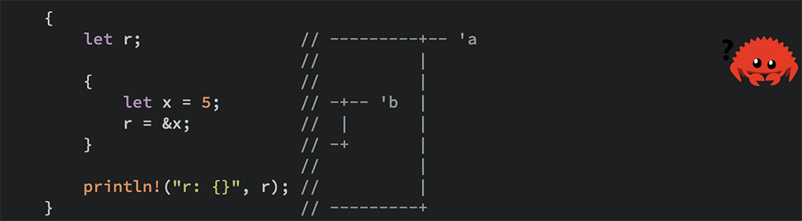

《The Rust Programming Language》读书笔记（第 7-11 章）
书接上回，第 7-11 章的笔记。
Chapter 7 - Managing Growing Projects with Packages, Crates, and Modules
- （Page：125）Rust 的模块系统元素包括：
- 包（packages）：一个可用于构建、测试和共享 crate 的 Cargo 特性；
- Crates：以树状结构组织的、可被用作库或可执行文件的一系列模块；
- 模块（modules）：可用于组织代码、作用域及路径可访问性；
- 路径（paths）：一种用于命名“项目”的方式，如 struct、function 或 module。
- （Page：125）包和 Crates：
- Crate：
- 可以是一个库（library）或二进制（binary）文件；
- crate root 是一个 Rust 编译器可以进行编译及组成该 crate 根模块的源文件（默认为 src/main.rs 或 src/lib.rs）；
- 如果将不同的 Rust 源文件放入 src/bin 文件夹内，则编译时每一个文件会生成单独的二进制 crate。此时需要使用
Cargo run --bin来指定需要运行的 crate。
- 包（package）：
- 由一个或多个 crate 组成，它对外提供了一系列的功能；
- 每个包都提供了一个 Cargo.toml 文件，描述了如何构建它所包含的所有 crate 的相关规则；
- 一个包必须包含 0 或 1 个库 crate，或多个二进制 crate。但总体而言必须包含至少一个 crate（库/二进制）。
- （Page：127）模块：
- 默认情况下，模块内定义的代码都是私有的（即仅内部作用域可引用外部作用域的条目）；
use关键字可以将一个 path 引入到当前作用域；- 对于方法，应该引入其最近一层父命名空间到当前作用域；
- 对于 struct、enum 等可以直接引入其定义所在命名空间到当前作用域；
- 可以使用“嵌套式”语法引入同一个 crate 的多个条目，或引入其下所有条目（常用于测试脚本）。
// use std::io;
// use std::io::Write;
use std::io::{self, Write}; // same as above.
use std::collections::*; // imports all the items under the given path.pub关键字可以使某个“条目（struct \ enum \ function \ method \ modules）”变为公有（可见性）；pub use可以将某个内部引用标记为公有的（一般用于处理库内部的实现结构与导出的外部接口结构不一致的场景）；as关键字用于定义外部包；- Paths：
- 绝对路径：从隐式的 crate root 开始指定，使用
crate关键字作为开始（更推荐使用，因为一般来说，代码实现与调用两者会分开进行存放）； - 相对路径：从当前模块（mod）开始指定，使用
self/super，或当前模块的标识符作为开始。
- 绝对路径：从隐式的 crate root 开始指定，使用
- 通过
mod关键字定义的模块内容可以被放置在与其声明（无定义部分）所在文件同名的文件夹内，以每个模块一个同名独立文件的形式存在。
// src/lib.rs
#![allow(dead_code)]
#![allow(unused_variables)]
#![allow(unused_mut)]
// load the contents of other module from another file with the same name.
mod other_mod;
mod mod_outter {
// export inner function for external use.
pub use mod_innter_b::bar;
pub enum Country {
China, // the variants belonging to this enum will be public.
America,
}
pub struct Person {
pub name: String,
pub country: Country,
age: u8,
}
impl Person {
pub fn construct_person(name: String, age: u8, country: Country) -> Person {
Person { name, age, country }
}
}
fn outter_fn() {
// can refer to sibling item by default.
mod_innter_a::bar()
}
pub mod mod_innter_a {
pub fn foo() {
super::outter_fn()
}
pub fn bar() {}
}
pub mod mod_innter_b { // priavte module.
fn foo() {}
pub fn bar() {}
}
}
// the same as using "crate::" since we are at the crate root level here where the "self" scope is equal to crate.
use self::mod_outter::mod_innter_a;
use crate::mod_outter::Person as APerson; // set alias for a path.
pub use crate::mod_outter::mod_innter_b::bar;
pub fn foo() {
// call a method exported by "pub use" insde "mod_outter".
mod_outter::bar();
// call function with relative path which defined with "use".
mod_innter_a::foo();
// same, but absolute path.
crate::mod_outter::mod_innter_a::foo();
let mut person = APerson::construct_person(String::from("YHSPY"), 27, mod_outter::Country::China);
// below line won't compile since "age" is a private field.
// person.age = 28;
other_mod::other_sub_mod::foo(); // call function defined in the other module of other file.
}Chapter 8 - Common Collections
- （Page：144）Vector：Vec<T>。
- 内部元素保存在 heap 上；
- 向 vector 添加元素可能导致必要的内存重新分配以及对旧元素的拷贝，如果没有足够的内存空间以“连续”的方式存放所有元素，则对 vector 中已有元素的引用可能会指向已经被清理的内存。因此对 vector 中引用元素的定义和使用需要放置在
push等操作后面，“引用定义”与“向 vector 添加元素”两者在作用域上不能交叉； - 基于
match的 exhaustive match 特性，Rust 编译器可以确保使用在 vector 中的 enum 其各个可能取值都已经被处理。
#![allow(dead_code)]
#![allow(unused_variables)]
fn main() {
let v: Vec<i32> = Vec::new();
// create Vector with macro (type will be inferred by initial values).
let mut v_by_macro = vec![1, 2, 3];
v_by_macro.push(4);
// read elements of Vector.
let third: &i32 = &v_by_macro[2]; // access by reference.
match v.get(2) { // "get" method returns an Option<&T>.
Some(v) => println!("{}", v),
_ => (),
}
println!("{}", third);
// iterate in turn.
for i in &mut v_by_macro {
*i *= 2; // deference and operate.
}
for i in &v_by_macro {
println!("{}", i);
}
// use heterogeneous enum in Vector.
#[derive(Debug)]
enum Gender {
Female,
Male,
}
#[derive(Debug)]
struct Person {
usename: String,
age: u8,
gender: Gender,
}
#[derive(Debug)]
enum HeterogeneousEnum {
NormalPerson(Person),
}
let person_vec = vec!(HeterogeneousEnum::NormalPerson(
Person {
usename: String::from("YHSPY"),
age: 27,
gender: Gender::Male,
}));
println!("{:#?}", person_vec);
}- （Page：150）String：
- 内部数据保存在 heap 上；
- 字符串内容基于 UTF-8 编码（grapheme clusters -> Unicode scalar -> bytes，*an extended grapheme cluster is a sequence of one or more Unicode scalars that (when combined) produce a single human-readable character）；
- 一个 String 类型是一个 Vec<u8> 类型的包装类；
- 对于 String 上的索引操作，由于需要从字符串的开头字节进行扫描以查找有多少有效字符，而无法以 O(1) 的常量时间完成，因此 Rust 选择不予支持。但可支持对 String 的切片操作。
#![allow(dead_code)]
#![allow(unused_variables)]
fn main() {
let data = "Здравствуйте"; // UTF-8 encoded.
let mut s = data.to_string(); // convert string literal to String object.
// update String.
s.push_str("bar");
s.push('b'); // take a single character.
println!("{}", s);
// concatenation with "+".
let s1 = String::from("Hello, ");
let s2 = String::from("world!");
// fn add(self, s: &str) -> String {}
let s3 = s1 + &s2; // s1 will be invalided.
let s = format!("{}-{}", s2, s3); // return a formatted String and doesn't take any ownership.
println!("{}", s);
// slicing Strings.
let s = &data[0..2];
println!("{}", s);
// iterate Strings.
for c in data.chars() { // "chars()" returns Unicode scalar values.
println!("{}", c);
}
for c in data.bytes() { // "chars()" returns each raw bytes.
println!("{}", c);
}
}- （Page：158）HashMap：HashMap<K, V>。
- 内部数据保存在 heap 上。
#![allow(dead_code)]
#![allow(unused_variables)]
fn main() {
use std::collections::HashMap;
let mut scores = HashMap::new();
scores.insert(String::from("Blue"), 10); // store data on the heap.
scores.insert(String::from("Yellow"), 50);
// generate a HashMap by "collect()".
let teams = vec![String::from("Blue"), String::from("Yellow")];
let initial_socres = vec![10, 50];
let mut scores: HashMap<_, _> = teams.into_iter().zip(initial_socres.into_iter()).collect();
// access values in a HashMap.
let score = scores.get(&String::from("Blue")); // return Option<&T>.
match score {
Some(v) => println!("{}", v),
_ => (),
}
// iterate kv pairs.
for (k, v) in &scores {
println!("{} {}", k, v);
}
// replace the existing kv pair.
scores.insert(String::from("Blue"), 20);
println!("{:#?}", scores);
// only insert a value if the key has no value.
let reference_to_inserted_value = scores.entry( // return a mutable reference.
String::from("Red")).or_insert(30);
// update a value based on the old value.
*reference_to_inserted_value += 1;
println!("{:#?}", scores);
}Chapter 9 - Error Handling
- （Page：164）Rust 中的两种错误类型：
- 可恢复：比如“文件未找到”，可以使用 Result<T, E> 类型处理；
- 不可恢复：比如“数字访问越界”，可以使用 panic! 宏进行处理。
- （Page：165）panic! 宏：
- 默认情况下，在发生 panic 时，Rust 会进行 stack-unwinding。可以通过设置 Cargo.toml 的方式来让 Rust 直接退出应用而不进行 unwinding（交由操作系统处理）。此时生成的二进制文件的体积也会相对减小；
[profile.release]
panic = 'abort'- 可以通过执行
RUST_BACKTRACE=1 Cargo run指令来打印发生 panic 时的函数调用栈。手动调用 panic 的方式如下：
fn main() {
panic!("crash and burn!");
}- 可以自动调用
panic!的“捷径”：
#![allow(dead_code)]
#![allow(unused_variables)]
use std::fs::File;
fn main() {
// returns the contained [Ok] value, or panic.
let f = File::open("hello.txt").unwrap();
// returns the contained [Ok] value, or panic with the given message.
let f = File::open("hello.txt").expect("Failed to open hello.txt");
}- （Page：168）Result<T, E> 类型：
- 泛型参数 T 表示成功时需要正常返回的数据；
- 泛型参数 E 表示失败时需要返回的，描述所发生错误的信息。
// enum Result<T, E> {
// Ok(T),
// Err(E),
// }
#![allow(dead_code)]
#![allow(unused_variables)]
use std::fs::File;
use std::io::ErrorKind;
fn main() {
let f = File::open("hello.txt");
let f = match f {
// the Result enum has been brought into the scope by default.
// Result::<_, _>::Ok(file) => file,
Ok(file) => file,
Err(error) => match error.kind() {
ErrorKind::NotFound => panic!("File not found!"),
other_error => panic!("{:?}", other_error),
}
};
}- （Page：173）错误传播：
- 用于将错误对象从 callee 传播到上层 caller；
- 可以通过将
?运算符置于返回值为 Result<T, E>（本质上为实现了 std::ops::Try 的方法）的表达式后面，以标记默认将该返回值的错误信息（若有）向上层调用者传播。通过运算符传播的错误信息会通过 from 方法（定义于标准库中的 From trait）进行错误信息的类型转换（将一个特定的错误类型转换为当前返回的错误类型）。
#![allow(dead_code)]
#![allow(unused_variables)]
use std::fs::File;
use std::io;
use std::io::Read;
fn main() {
fn foo() -> Option<i32> {
fn bar() -> Option<i32> {
return None;
}
let num = bar()?;
Some(num)
}
let result_opt = foo();
if let Some(v) = result_opt {
println!("{}", v);
} else {
println!("Got None.");
}
}
fn read_username_from_file() -> Result<String, io::Error> {
let mut f = File::open("hello.txt")?; // propagate the error to the caller.
// let mut f = match f {
// Ok(file) => file,
// Err(e) => {
// return Err(e)
// },
// };
let mut s = String::new();
// match f.read_to_string(&mut s) {
// Ok(_) => Ok(s),
// Err(e) => Err(e),
// }
f.read_to_string(&mut s)?; // propagate the error to the caller.
// chaining method call with "?.".
let mut s = String::new();
File::open("hello.txt")?.read_to_string(&mut s)?;
Ok(s)
}- （Page：178）main 函数的返回值：
- Box<dyn Error> 为一个 triat object，意味着返回值可以包含任意类型的 Error。
fn main() -> Result<(), Box<dyn Error>> {}- （Page：178）何时使用
painc!？
- 默认情况下返回 Result<T, E> 对象；
unwrap()，expect()与panic!()一般优先用于原型测试代码中；unwrap()也可被用在确定不会产生错误的场景中（用来快速获取返回值）；- 可以通过“新建类型”来限定对某个基本类型的一些严格依赖的约束条件（contract，如可取值范围），每次在构建该类型对象时进行约束条件的判断，不满足要求则 panic。
mod global {
#[derive(Debug)]
pub struct Guess {
value: i32, // this field is private by default.
}
impl Guess {
pub fn new(value: i32) -> Guess {
if value < 1 || value > 100 {
panic!("Guess value must be between 1 and 100, got {}.", value);
}
Guess { value }
}
pub fn value(&self) -> i32 { // a getter.
self.value
}
}
}
fn main() {
let guess = global::Guess::new(1);
println!("{:#?}", guess);
}Chapter 10 - Generic Types, Traits, and Lifetimes
- （Page：186）泛型（Generic）：
- 对类型的抽象；
- 可以建立针对 function、struct、method 以及 enum 等类型的泛型。
// generic function.
fn foo<T>(list:&[T]) -> &T {}
// generic struct.
struct Point<T, U> {
x: T,
y: U,
}
impl<T, U> Point<T, U> where T: Copy, U: Copy { // types in this line go with the definition of the Point struct itself.
fn mixup<V, W>(&self, other: Point<V, W>) -> Point<T, W> { // types in this line are only relevant to the method.
Point {
x: self.x,
y: other.y,
}
}
}
// methods only for generic type f32.
impl Point<f32, f32> {
fn disance_from_origin(&self) -> f32 {
(self.x.powi(2) + self.y.powi(2)).sqrt()
}
}
// generic enum.
enum Option<T> {
Some(T),
None,
}- （Page：196）特质（Trait）：
- 一个 trait 可以告诉编译器一种特定类型所具有的“功能”，并且可以将这个“功能”共享给其他类型。我们可以使用 trait 以一种抽象的方式来定义类型之间的共享行为（与其他语言中的 interface 类似，但仍有些许区别）；
- 内聚性（孤儿法则）：triat 的定义或者类型的定义，二者之一必须在本地（当前 crate），才可以为某个类型实现某个 triat*。（比如：无法为
Vec<T>类型实现 *Display trait）；
// define a trait.
pub trait Summary {
// fn summarize(&self) -> String;
fn summarize_author(&self) -> String;
// trait method with default implementation, can be overridden.
fn summarize(&self) -> String {
// a trait method can call other methods defined within the same trait.
format!("default implementation - {}", self.summarize_author())
}
}
struct Person {
username: String,
age: u8,
}
// implement a trait (no instance methods included).
impl Summary for Person {
// fn summarize(&self) -> String {
// format!("{}-{}", self.username, self.age)
// }
fn summarize_author(&self) -> String {
format!("@{}", self.username)
}
}
// the "impl Trait" syntax can also be used for return type.
pub fn notify(item: &impl Summary) {
println!("Breaking news! {}", item.summarize());
}
// genric type style, equivalent to the above one.
// pub fn notify<T: Summary>(item: &T) {
// println!("Breaking news! {}", item.summarize());
// }
fn main() {
let p = Person {
username: String::from("YHSPY"),
age: 27,
};
// call the trait method.
println!("{}", p.summarize());
notify(&p);
}- 借助 “+” 语法来指定多个 trait bound：
pub fn notify(item: &(impl Summary + Display)) {}
pub fn notify<T: Summary + Display>(item: &T) {}- 使用 where 子句简化 trait bound 的指定：
fn foo<T, U>(t: &T, u: &U) -> i32
where T: Display + Clone, U: Clone + Debug {}- 根据泛型参数依赖的 trait 不同，实现不同的方法：
use std::fmt::Display;
struct Pair<T> {
x: T,
y: T,
}
impl<T> Pair<T> {
fn new(x: T, y: T) -> Self {
Self { x, y }
}
}
impl<T: Display + PartialOrd> Pair<T> {
fn cmp_display(&self) {
if self.x >= self.y {
println!("The largest member is x = {}", self.x);
} else {
println!("The largest member is x = {}", self.y);
}
}
}- blanket implementations：为某个已符合特定 trait 的类型实现另一个 trait。其形式诸如：
impl<T: Display> ToString for T {}- （Page：208）Lifetime：The Rust’s most distinctive feature。本身也是一种泛型，可以帮助 Borrow Checker 在编译器检查引用的生命期。

- 两个常用形式：
T: 'a: All references inTmust outlive lifetime'a；T: Trait + 'a: TypeTmust implement traitTraitand all references inTmust outlive'a。
- Rust 中的每一个引用都有一个对应的 lifetime*，Rust 编译器可以通过 *lifetime 之间的相互关系来保证程序的内存安全（如避免“悬挂指针”）；
- 当从函数中返回引用时，返回值的 lifetime 参数需要与输入参数中的至少一个相匹配。
// the borrow checker doesn't know which borrowed value would be returned, so we need to tell it the lifetimes of the returned reference.
// add generic lifetime annotations (the lifetime of the returned reference should be the smaller of the lifetimes of "x" and "y").
fn longest<'a>(x: &'a str, y: &'a str) -> &'a str {
if x.len() > y.len() {
// will return a borrowed value.
x
} else {
y
}
}
fn main() {
let str1 = String::from("abcd");
let str2 = "xyz";
let result = longest(str1.as_str(), str2);
println!("The longest string is {}", result);
}- 在 struct 中存放引用类型：
// an instance of ImportantExcerpt can't outlive the reference it holds in its "part" field.
struct ImportantExcerpt<'a> {
part: &'a str,
}- 在 struct 的方法中使用引用类型：
impl ImportantExcerpt {
fn announce_and_return_part(&self, announcement: &str) -> &str {
println!("Attention please: {}", announcement);
self.part // get the lifetime of "&self" implicitly.
}
}- Rust 编译器默认情况下会使用以下三个规则（lifetime-elision-rules）来找出没有显式注释时引用的 lifetime。第一个规则应用于 input-lifetime（方法/函数入参），第二三个规则应用于 output-lifetime（方法/函数返回值）：
- 第一条：作为引用的每个参数都有自己的 lifetime 参数；
- 第二条：如果仅存在一个输入参数的 lifetime，则将该其分配给所有输出参数；
- 第三条：如果有多个输入参数，但是其中一个是
&self或&mut self。会将self的 lifetime 分配给所有输出参数。
// we don't need to specify the lifetime for each parameter here explicitly due to the above rules.
fn first_word(s: &str) -> &str {
let bytes = s.as_bytes();
for (i, &item) in bytes.iter().enumerate() {
if item == b' ' {
return &s[0..i];
}
}
&s[..]
}'staticlifetime：生命期与整个应用相同（所有的字符串字面量有该生命期）。
// the text of this string is stored directly in the program’s binary, which is always available.
let s: &'static str = "I have a static lifetime.";- （Page：222）同时使用泛型、Trait 以及 Lifetime：
use std::fmt::Display;
fn longest_with_an_announcement<'a, T> (
x: &'a str,
y: &'a str,
ann: T,
) -> &'a str where T: Display, {
println!("Announcement! {}", ann);
if x.len() > y.len() {
x
} else {
y
}
}Chapter 11 - Writing Automated Tests
- （Page：223）如何编写测试脚本：
- 一个测试函数通常执行三个动作：
- 设置需要的状态或数据；
- 运行需要测试的代码；
- 对得到的结果进行断言测试，以确定其符合预期。
- 当使用
cargo new --lib创建新的库项目时，Rust 会默认生成一个测试 mod，可以用来存放测试相关代码； cargo test会运行所有被标记为#[test]的函数；- 默认情况下，所有的测试函数会通过线程并行执行。
mod lib {
use std::fmt;
#[derive(Debug)]
pub struct Rectangle {
width: u32,
height: u32,
}
impl Rectangle {
pub fn can_hold(&self, other: &Rectangle) -> bool {
self.width > other.width && self.height > other.height
}
pub fn new(width: u32, height: u32) -> Rectangle {
Rectangle { width, height }
}
}
impl fmt::Display for Rectangle {
fn fmt(&self, f: &mut fmt::Formatter<'_>) -> fmt::Result {
write!(f, "({}, {})", self.width, self.height)
}
}
}
// export to external env.
pub use lib::Rectangle;
#[cfg(test)]
mod tests {
use super::*;
#[test] // indicate the next function is for test.
fn it_works() {
assert_eq!(2 + 2, 4);
assert_ne!(2 + 3, 4);
}
#[should_panic(expected = "it panics!")] // makes a test pass if the code inside the function panics.
#[test]
fn it_panics() {
panic!("it panics!");
}
#[test]
fn larger_can_hold_smaller() {
let larger = Rectangle::new(8, 7);
let smaller = Rectangle::new(5, 1);
// with custom failure messages.
assert!(larger.can_hold(&smaller), "{}-{}", larger, smaller);
}
#[test]
fn with_result() -> Result<(), String> { // we can use error-propagation way(?) here.
if 2 + 2 == 4 {
Ok(()) // test passed.
} else {
Err(String::from("two plus two does not equal four!")) // test failed.
}
}
}- （Page：241）控制测试的运行：
- 设置可以使用的测试线程数量：
cargo test -- --test-threads=<num>； - 默认情况下，在成功的测试 case 中输出的内容（printed-value）不会显示在控制台中，可以使用命令
cargo test -- --show-output让 Rust 将该内容打印； - 执行单个测试函数：
cargo test <full_function_name>； - 执行多个测试函数（模糊匹配）：
cargo test <partial_function_name/partial_mod_name>； - 默认忽略执行某些测试函数：使用
#[ignore]属性。若想同时执行所有这些被默认忽略的测试函数，可以通过cargo test -- --ignored（可以添加函数名来分别执行）。
#[test]
#[ignore]
fn expensive_test() {}- （Page：248）测试体系：
- 单元测试：
- 小且专注；
- 每次单独测试一个模块，并且可以测试私有接口。
- 一般在每个源代码文件内部直接编写，测试函数放置于
mode test {}模块内部。该模块带有属性#[cfg(test)]用来告知 Rust 编译器仅在执行测试时运行该模块中的代码，并且在编译生成二进制文件时，忽略测试代码。cfg 表示 “configuration”。
- 集成测试：
- 只有 Library Crates 可以使用；
- 独立于库代码；
- 使用库暴露出的公有接口；
- 测试时可能跨越多个模块；
- 测试脚本需要放置于与 src 同级的 “tests” 文件夹内，每个脚本文件会被编译成独立的 crate；
- 仅执行集成测试：
cargo test --test integration_test <partial_function_name>；
// a case of integration test file.
use my_test_lib::*;
#[test]
fn larger_can_hold_smaller() {
let larger = Rectangle::new(8, 7);
let smaller = Rectangle::new(5, 1);
// with custom failure messages.
assert!(larger.can_hold(&smaller), "{}-{}", larger, smaller);
}- 集成测试需要的公共代码需要放到特定的 tests/common/mod.rs 文件中，使用时通过
mod将该模块内容引入所在测试脚本文件。
mod common;
// ...